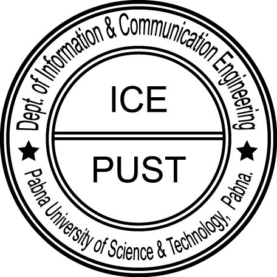

Vissions & Missions

Visions of the department
To become a front-runner in preparing graduates to achieve the desired skills, knowledge, and attitude in the field of Information and Communication Engineering (ICE) to meet the current and future challenges of ICE-oriented academia, industry, and society in the national and global areas.
Missions of the department
Department of Information and Communication Engineering is working with the following missions in order to accomplish the vision.
- To promote the establishment of centers of excellence inappropriate technological areas to enhance the spirit of innovation and creativity among faculty members and students.
- To facilitate adequate need-based quality training for solving the complex engineering problem in information and communication engineering field.
- To offer quality education to investigate, participate in research oriented activities, pursue higher education and transfer knowledge in both theoretical and practical aspects in ICE.
- To develop the skills and abilities of students to become productive as local as well as global citizens and lifelong learners.